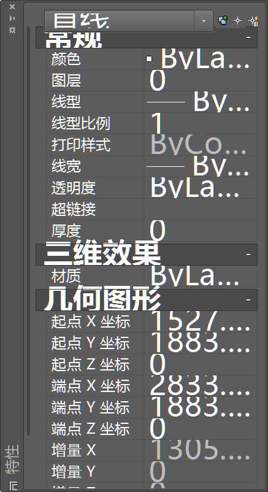
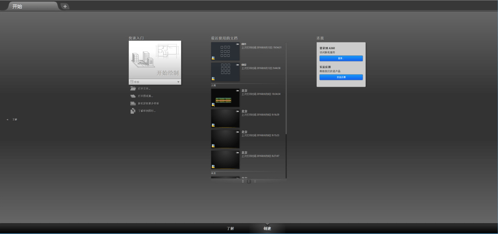
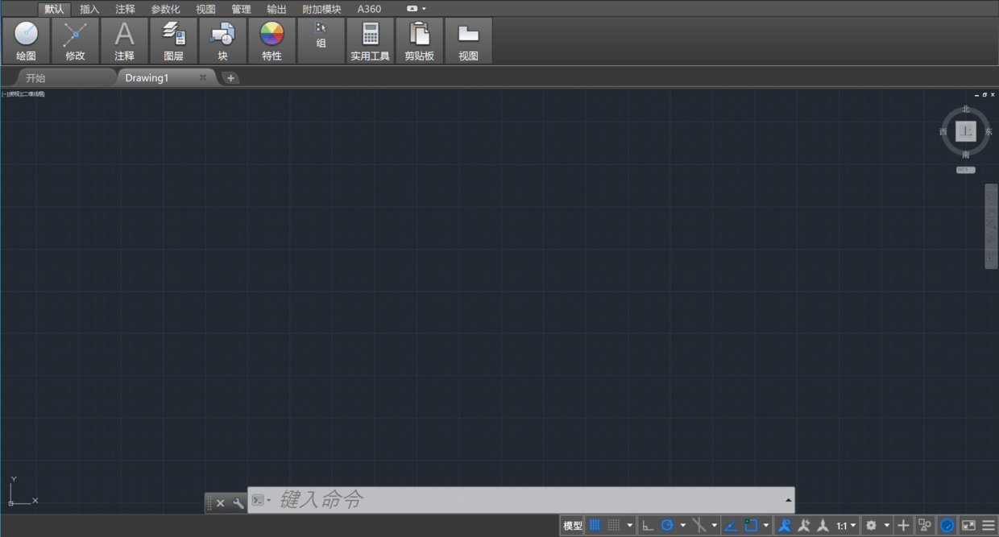

关于天大北洋苹果店的郁闷经历
可“化力气为浆糊”，却无法化干戈为玉帛，故出此文以慰昔日及今日之郁闷。
最近感到不太满意电脑的性能和存储空间，遂想再购置一台电脑。在 MacRumors 查询了购买建议（建议诸君也这么做），发现 14 年款 MacBook Pro 是于 2014年7月29日 凌晨发布。想到自己原先的 MacBook Pro 2013 末 似乎也是在 14 年六七月份所购。
遂找来在天大北洋科技开发有限公司：苹果天大校园店买电脑的签购单，确认购买一个月后新款 MacBook Pro 2014 中 就上市了，除了教育优惠还可以叠加新学期返校教育优惠，再优惠 600 人民币……
导购员为何不给个建议呢？不过如果仅是这样的话，时至今日我大概也只是皱皱眉，因为毕竟是自己考虑不周。可一想到购买电脑时导购员的态度：是偏于随意的态度，两三人自顾聊着天，偶尔和我说两三句。还说教育优惠需要拍摄学生证，可却使用私人手机拍摄，我对自己信息的安全性表示一定的怀疑。
可一想到电脑设置出现问题时去店里时遭到的待遇：是偏于无所谓的态度，眼睛男低着头摆弄着手机，话中意思大概是售后问题去找售后点，不关我们的事。这个其实是学校邮件设置问题，情况是只能接受邮件而无法发送，官方客服也不知如何是好。我自己解决后，特地告诉了官方客服并请求记录下解决方法。
如果天大北洋苹果店态度稍好，我也不至于今日产生强烈的不满。后来，有位自称天大北洋店工程师的人欲加我微信好友，表示愿意帮助我解决问题。当时心情郁闷的我，加上问题也解决了，就任性地选择了忽视。不得开心颜的我，也就顺理成章地写了这篇吐槽文。诚然，天大北洋科技开发有限公司母校也参了股。当时选择在这购买主要就是看中了这点，后来同学也打算在这买，我自然以自己糟糕的体验为例去劝阻，莫要迷惑了双眼。
衷心建议天大北洋科技开发有限公司：苹果天大校园店重视培养员工素质，不谈将客户视为上帝，至少也应该态度友好，真诚为顾客着想？既然你们店员说不提供售后，有使用问题也要找官方售后，既然贵店的服务体验也不佳，那又有何种理由在你店购物呢？打母校感情牌？抱歉我不会在你这购物了，甚至会劝阻朋友在你这购物。毕竟，解释某些操作时将我当作无知笨蛋的那种态度，前来问询时随口打发到官方售后店的做法......真有把自己当作母校的一份子？真有把我当作来自母校的朋友？
终于舒展了当日与今天的郁闷之情。
总结
苹果官网的商品一般都不会降价，即便在新品上市前。苹果只会在特殊时间段如开学季促销，这也导致了相当一部分人用了同样的价格却买到了真实价值下降的产品。而新品上市前，经销商从苹果拿到商品的成本价应该会降低，但面对顾客的售价很可能也不变。所以无论怎样，最终只能是消费者买单。
我认为对顾客最友好的做法是按时间降价，似乎亚马逊原来就是这样的做法。突然降价的行为对购买者无疑是一种相当差的体验，新产品上市与旧产品同样价格的做法也是如此。这样的做法有助于企业得到最大化的利润，却深深地伤害了部分消费者的体验。我已经多次体会到了。然而我们又能怎么办呢？
关于 AutoCAD 在高分辨率下的显示问题
许多人都在责怪 Autodesk 公司，官方论坛中 这里，还有这里 均可以看到，其中一个意大利女建筑师 Silvia Orlandini 尤其让我印象深刻，但不幸的是 Autodesk 公司至今也并没有解决 AutoCAD 高分辨率下的显示问题，即使是 CAD 2017 依旧面临这个感人的问题。几乎所有的讨论（还有这个），均有位自称 Autodesk 公司雇员 Bill Glennie 说公司开发团队已着手寻找解决办法。

在美联论坛也有讨论 类似问题，在 Google+ 中也不乏声讨。在这些讨论中，有人说 Autodesk 公司指责这是微软的问题，电脑生产商认为这是微软和软件开发商的问题。似乎这个问题就是一个皮球，被踢来踢去，数年未解决这个问题也就不足为怪了。它终将解决，只是苦了从前、现在和一两年后的我们。
其实 Autodesk 也提供了所谓的办法，比如 此方法，还有这个，但没有任何效果或者可能对稍低分辨率的显示器有效果。目前，我仅仅发现了一个折衷的方法。
开始界面也有显示问题，但 Autodesk 公司已提供了相关补丁。抱歉的是因较久之前安装的补丁，我忘记了其名与地址。

前面所讲的折衷办法就在 这里，它不仅可以解决 Autodesk 系列产品比如 AutoCAD 在高分辨率下的显示问题，还可以解决 Adobe 系列产品比如 Photoshop 的的显示问题。但折衷办法会使 AutoCAD 界面模糊...虽然目前会出现重复显示的菜单，但是经常使用的主界面还是正常的。其实是我无法忍受模糊...

下载何须迅雷
通常浏览器下载就可以满足日常需求。迅雷也一直是一个很好的加速下载工具，但是它有些笨重了。本次介绍下载利器 curl 这个免费开源工具。本文灵感来源于此谷歌博客：语虚。
curl
终端命令
比如 cd 到桌面目录，输入 curl -O https://www.jianguoyun.com/p/DeQRYFYQ--fwBRju_h4 回车即可在桌面得到名为 DeQRYFYQ--fwBRju_h4 的文件。大写字母 o 意为 remote-name。如果想要自定义文件名可以输入 curl -o 自定义.名字 https://www.jianguoyun.com/p/DeQRYFYQ--fwBRju_h4。
更多命令及讲解可 看这里。
更多功能
curl 功能特别多，比如还支持断点下载、使用代理下载、限制文件大小或网速等等，具体可 看这里。
curl 可满足日常的下载需求，但是比如 PT 资源也需要其他工具。
其他工具
PT 下载工具
两者均免费开源且无广告的 BT 下载工具。
- Transmission Macintosh & Linux
- qBittorrent Macintosh & Windows
评价
- flox 号称 Macintosh 下最好的下载器，但是我并没有发现特别的亮点，通常用浏览器下载就行了。
- 迅雷 搞个迅雷会员来下载某些资源确实挺给力，但日常需求完全不需要用它。不简洁的软件就是不喜欢。Windows 上有迷你版，Macintosh 却没有。
- 电驴 似乎是在 2016 年重出江湖。确实是神器，在备用的 Windows 中使用，资源大多比较污。
命令行最大的劣势就是不直观，但熟悉了也就“直观“了，况且如此简洁且强大，值得一学。但我几乎只使用浏览器下载，如果有要下载的特殊资源，会在虚拟机中开迅雷或 QQ 旋风下载。
Zotero 如何添加文章检索引擎
本文被少数派精选：点此查看
Zotero 是优秀的免费开源个人知识管理工具，一般用于管理学术文献，其以跨 macOS、Windows、Linux 三大平台、强大易用的功能闻名于学术圈。如果你是新生或者还未使用文献管理工具，如果你需要知识管理工具，Zotero 可能是你最好的选择之一。关于 Zotero 的使用教程数不胜数，但本文所讲的问题「如何添加文章（文献）检索引擎」任何其他教程都没有给出解决方案，我也是探索良久才得出解决办法。
添加列表中没有的检索引擎，请在浏览器中访问检索引擎网页，并从 Zotero 的“定位”菜单中，选择“添加”。但崩溃的是按照此提示的操作，无法添加检索引擎。

Copyright © 2018 唐小筑 CC BY-NC-SA 4.0